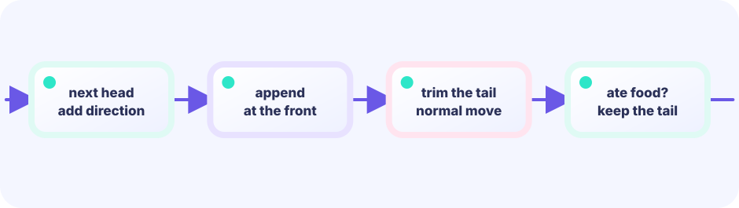

Grid coordinates
Divide the screen into cells and store positions as integer pairs — column and row. Collision detection is then just checking whether two coordinates are equal.
const cell = 24★★★☆☆ / PLAYABLE
Move on a grid and keep every visited position as the snake's body. Prepend a new head and drop the old tail — that two-step swap is everything.
FIRST-TIME READER
Find where this one line is used, then follow how its value changes on screen. This is the shared Update → Draw skeleton for the whole path; the numbered steps below add one system at a time.
ONE RULE TO TRACE
Match the explanation to this line, then test the change in the game.
body = append([]Cell{head}, body[:len(body)-1]...)Think in squares
A grid divides the screen into equal cells. Add the new head at the front of the history, then remove one tail cell when no food was eaten.
480 ÷ 32 = 15
new head → [●][●][●] → drop tail
front lastThe skeleton is still the LEVEL 01 Update → Draw loop. This lesson only adds its new piece (bounce, bricks, or a growing body). Drawing and hits stay simple shapes.

PLAYABLE / WEBASSEMBLY
Arrow keys or a tap in any direction turns the snake. Each piece of food adds one body segment. Hit a wall or yourself and the game ends.
DEEP DIVE / GRID AND HISTORY
The snake's body is a history of grid positions — nothing more. Each step, prepend the new head to the list and remove the last entry unless food was eaten. Those two operations produce the familiar winding body.
Divide the screen into cells and store positions as integer pairs — column and row. Collision detection is then just checking whether two coordinates are equal.
const cell = 24The body is a []point slice. Index [0] is the head; the last index is the tail. The length of the slice is the length of the snake.
body []pointAdd the new head at position zero, remove the last element if no food was eaten. Two lines of code, complete movement.
body[:len(body)-1]TRY IT / GRID HISTORY
“Move” prepends a head and trims the tail. “Eat” keeps the tail so the body grows.
The body is a list of grid points.
TRY IT · GO
head := body[0]; next := Point{head.X+dx, head.Y+dy} body = append([]Point{next}, body...) if !ate { body = body[:len(body)-1] }
—
THE TWO-LINE MOVE
body = append([]point{head}, body...)thenbody = body[:len(body)-1]Line one inserts the new head at the front. Line two cuts the old tail. When food is eaten, skip line two and the snake permanently grows by one cell.
The trailing ... in append([]point{head}, g.body...) unpacks the slice: pass every point inside g.body, not the slice as one argument.
Reverse-direction block d.x+g.dir.x==0 && d.y+g.dir.y==0 means “inputs cancel.” Right (1,0) plus left (-1,0) is (0,0). Same or perpendicular dirs do not sum to zero.
Touch aim abs(dx) > abs(dy) asks which axis has the bigger offset — mostly horizontal → left/right, mostly vertical → up/down.
IN THE REAL GAME
The snake does not move every frame — it waits several frames, and that wait shrinks as the score climbs, making the game faster over time.
Reading order: ① prepend the new head to the list → ② if food was eaten, leave the tail alone (that's the growth) → ③ otherwise trim one tail cell. Read the code in that order and it clicks.
func (g *game) Update() error {
g.frame++
// fewer wait frames as score rises → snake speeds up
if g.frame%max(4, 10-g.score/3) != 0 {
return nil
}
g.dir = g.nextDir
head := point{g.body[0].x + g.dir.x, g.body[0].y + g.dir.y}
// wall and self-collision
if outOfBounds(head) || selfCollision(head, g.body) {
g.gameOver = true
return nil
}
// prepend head; drop tail unless food was eaten
g.body = append([]point{head}, g.body...)
if head == g.food {
g.score++
g.placeFood()
} else {
g.body = g.body[:len(g.body)-1]
}
return nil
}TODAY — look here first
The code below is the entire game (drawn with simple shapes). Copy it to your editor — but first follow the three “look here first” points above.
Note: inline comments in this full listing are in Japanese for young learners. The English teaching snippets above are your guide.
package main
import (
"fmt"
"image/color"
"math/rand"
"github.com/hajimehoshi/ebiten/v2"
"github.com/hajimehoshi/ebiten/v2/ebitenutil"
"github.com/hajimehoshi/ebiten/v2/inpututil"
"github.com/hajimehoshi/ebiten/v2/vector"
)
const (
screenWidth = 480
screenHeight = 720
cellSize = 24
)
// マス目上の1点
type point struct {
x, y int
}
type game struct {
body []point // [0] が頭
dir point // いま進んでいる向き
nextDir point // 次の移動で使う向き
food point
frame int
score int
gameOver bool
rng *rand.Rand
}
func newGame() *game {
g := &game{
body: []point{
{10, 14},
{9, 14},
{8, 14},
},
dir: point{1, 0},
nextDir: point{1, 0},
rng: rand.New(rand.NewSource(31)),
}
g.placeFood()
return g
}
func abs(n int) int {
if n < 0 {
return -n
}
return n
}
func restartPressed() bool {
if inpututil.IsKeyJustPressed(ebiten.KeySpace) {
return true
}
if inpututil.IsMouseButtonJustPressed(ebiten.MouseButtonLeft) {
return true
}
if len(inpututil.AppendJustPressedTouchIDs(nil)) > 0 {
return true
}
return false
}
// 逆向きには曲がれない
func (g *game) setDir(d point) {
if d.x+g.dir.x == 0 && d.y+g.dir.y == 0 {
return
}
g.nextDir = d
}
func (g *game) placeFood() {
for {
p := point{
x: g.rng.Intn(screenWidth / cellSize),
y: 2 + g.rng.Intn(screenHeight/cellSize-4),
}
onBody := false
for _, b := range g.body {
if b == p {
onBody = true
break
}
}
if !onBody {
g.food = p
return
}
}
}
func (g *game) readInput() {
if inpututil.IsKeyJustPressed(ebiten.KeyArrowUp) || inpututil.IsKeyJustPressed(ebiten.KeyW) {
g.setDir(point{0, -1})
}
if inpututil.IsKeyJustPressed(ebiten.KeyArrowDown) || inpututil.IsKeyJustPressed(ebiten.KeyS) {
g.setDir(point{0, 1})
}
if inpututil.IsKeyJustPressed(ebiten.KeyArrowLeft) || inpututil.IsKeyJustPressed(ebiten.KeyA) {
g.setDir(point{-1, 0})
}
if inpututil.IsKeyJustPressed(ebiten.KeyArrowRight) || inpututil.IsKeyJustPressed(ebiten.KeyD) {
g.setDir(point{1, 0})
}
// タップした方向へ曲がる
px, py, pressed := 0, 0, false
if inpututil.IsMouseButtonJustPressed(ebiten.MouseButtonLeft) {
px, py = ebiten.CursorPosition()
pressed = true
}
if ids := inpututil.AppendJustPressedTouchIDs(nil); len(ids) > 0 {
px, py = ebiten.TouchPosition(ids[0])
pressed = true
}
if !pressed {
return
}
head := g.body[0]
headPX := head.x*cellSize + cellSize/2
headPY := head.y*cellSize + cellSize/2
dx := px - headPX
dy := py - headPY
if abs(dx) > abs(dy) {
if dx < 0 {
g.setDir(point{-1, 0})
} else {
g.setDir(point{1, 0})
}
} else {
if dy < 0 {
g.setDir(point{0, -1})
} else {
g.setDir(point{0, 1})
}
}
}
func (g *game) stepSnake() {
g.dir = g.nextDir
head := point{
x: g.body[0].x + g.dir.x,
y: g.body[0].y + g.dir.y,
}
// 壁
maxX := screenWidth / cellSize
maxY := screenHeight / cellSize
if head.x < 0 || head.x >= maxX || head.y < 2 || head.y >= maxY-2 {
g.gameOver = true
return
}
// 自分の体
for _, b := range g.body {
if head == b {
g.gameOver = true
return
}
}
// 頭を前に足す
g.body = append([]point{head}, g.body...)
if head == g.food {
g.score++
g.placeFood()
return // しっぽを残して長くする
}
// 食べていなければしっぽを1つ消す
g.body = g.body[:len(g.body)-1]
}
// --- ここから Update ---
func (g *game) Update() error {
if g.gameOver {
if restartPressed() {
*g = *newGame()
}
return nil
}
g.readInput()
g.frame++
// スコアが上がると少し速くなる
wait := max(4, 10-g.score/3)
if g.frame%wait != 0 {
return nil
}
g.stepSnake()
return nil
}
// --- ここから Draw ---
func (g *game) Draw(screen *ebiten.Image) {
screen.Fill(color.RGBA{7, 20, 38, 255})
for x := 0; x < screenWidth; x += cellSize {
for y := cellSize * 2; y < screenHeight-cellSize*2; y += cellSize {
vector.StrokeRect(screen, float32(x), float32(y), cellSize, cellSize, 1, color.RGBA{45, 226, 194, 20}, false)
}
}
vector.DrawFilledCircle(
screen,
float32(g.food.x*cellSize+cellSize/2),
float32(g.food.y*cellSize+cellSize/2),
9,
color.RGBA{255, 105, 79, 255},
false,
)
for i, b := range g.body {
c := color.RGBA{45, 226, 194, 255}
if i == 0 {
c = color.RGBA{255, 210, 72, 255}
}
vector.DrawFilledRect(
screen,
float32(b.x*cellSize+2),
float32(b.y*cellSize+2),
float32(cellSize-4),
float32(cellSize-4),
c,
false,
)
}
ebitenutil.DebugPrintAt(screen, fmt.Sprintf("SCORE %02d", g.score), 205, 18)
if g.gameOver {
ebitenutil.DebugPrintAt(screen, "GAME OVER\n\nTAP / SPACE TO RETRY", 160, 340)
} else {
ebitenutil.DebugPrintAt(screen, "ARROWS / TAP A DIRECTION", 150, 685)
}
}
func (g *game) Layout(_, _ int) (int, int) {
return screenWidth, screenHeight
}
func main() {
ebiten.SetWindowSize(screenWidth, screenHeight)
ebiten.SetWindowTitle("Snake — Ebitengine")
if err := ebiten.RunGame(newGame()); err != nil {
panic(err)
}
}
WITHOUT A GRID
Tracking movement at pixel resolution means the body can drift out of alignment, making collision checks much harder. Integers snapped to a cell remove that entire problem.
WITH SLICE HISTORY
Want to know how long the snake is? Just call len(g.body). Want every body cell's position? Walk the slice. The data structure is the snake.
YOUR FIRST TUNING
Increase cell for a coarser grid and a fatter snake. Adjust the speed formula 10-g.score/3 to change how quickly the game accelerates. Make the snake start longer by adding more entries to the initial body slice in newGame.
Next level you will move several lists at once (bullets, enemies, stars)—not one snake. Deleting from the back shows up again there.
FEEDBACK